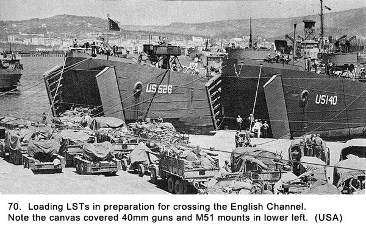

|
Table of Contents < - - - return Chapter 14 < - - - next
World War II Story by Robert F. Gallagher Chapter 13 - Crossing the English Channel I hate war as only a soldier who has lived it can, only as one who has seen its brutality, its stupidity. General Dwight D. Eisenhower _______________________ Finally, we were informed that we were moving out, but, as usual, not specifically where we were going. Even without that knowledge, there was great anticipation as we were sure that it meant we were finally going across the English Channel to the ETO. It also meant we were leaving the detested Camp Stapley.  We loaded up our trucks, hitched up our guns, and headed southeast to the port of Weymouth on the South coast, which was only about a forty-mile trip from our camp. It was March 1, 1945. Morale was extremely high and I later wondered if the overall display of near euphoria was actually hidden nervousness. We stayed there in Temporary Camp RCRP-06 for several days as we loaded up all of our equipment on Landing Ship Tanks (LSTs) (See Fig. 70). These ships were 328 feet in length and 50 feet wide. They are capable of unloading military men and equipment without the use of dock facilities. They could sail headfirst right up on a beach, the front end had two large doors that opened to a width of 14 feet, a ramp went down, and trucks, tanks, or any other vehicle were driven right up on land. The lower deck was where our trucks, 40 mm guns, M-51 mounts, and the heavier equipment were stored. Lighter equipment like the portable kitchens was carried on the upper deck. There were rooms for the troops along the sides with bench like seats. The vessel was powered by two diesel engines and had a cruising speed of approximately nine knots. The vessel was armed with seven 40 mm and twelve 20 mm antiaircraft guns. The crew of the ship was manning them. It took longer than anticipated to load our equipment on board because the guns and trucks all had to be backed in and then chained down. We sailed across the English Channel for France. We had been warned to expect a rough ride, and it was. The ship seemed to roll and pitch so much that we had trouble staying on the smooth wooden benches we were sitting on. The chains holding down the guns and trucks were straining under the load they were holding. While some of the troops got sick, I didn't, although it was close. We were on the ship for about twenty-four hours, but I don't know how much of that time was sailing and how much was just sitting in the harbor. We had no portholes to see out, and we were not near the engine room. Finally, the rolling and pitching let up, and we were notified that we were nearing shore. The LST stopped suddenly and the ship lurched slightly to one side. We stepped out of our quarters into the loading bay to see the doors swing open onto a sandy beach. The weather was sunny and bright. Beyond the beach, was another story. The view was one of mass destruction. My first view of Europe was the sight of the totally bombed-out city that we would later learn was Le Havre, France. It was March 6th, exactly nine months to the day since the Allied Forces landed in Normandy on D-Day, June 6, 1944. We loaded up on our trucks and drove up onto the beach. "Welcome to the ETO!" several men cried out. The truck that I was on with eight of our fifteen-man gun crew was pulling the 40 mm gun behind it. The truck behind us had the rest of our crew aboard, and they were pulling the M-51 mount with its four .50 caliber machine guns. Our gun could not fire from a traveling position, but the mount could. We had not even drawn ammunition yet for our 40 mms, but the machine gun mount was loaded and ready to go. There was a man in the bucket seat, and two other men were riding on the mount to act as loaders if necessary. Following the gun crews off the ship were the supply, mess, and headquarters vehicles. Although I had seen some bomb damage in London and in newsreels, I was not prepared for what I saw in Le Havre once we got in position to observe the overall landscape. The city was just a mass of rubble. Although we would see some heavily damaged cities later in Germany and other parts of Europe, Le Havre may have been the worst. Where were the people who lived there? How did those who were left manage to live in the midst of such total destruction? These were the questions we asked ourselves. This was a good-size city, and for as far as you could see, it had been laid to total waste. We didn't see a single building still standing in its entirety, and there were large areas where not a visible part of a buildings could be seen - just piles of rubble where they had stood. We wondered about the French people who had lived there. How did they feel about the total ruin of their city? Certainly they were happy to be liberated from German occupation, but at what cost? Thousands of civilians must have been killed in the battle for the city. They had lost their homes and everything else they owned that was in them. It was a heavy price to pay, and they must have had many mixed feelings about it. We pulled our truck up onto a street that had been cleared of debris by Army bulldozers to line up for our convoy. It was quite an exciting time for all of us; even though we were not near the combat zone, we knew that we were headed there. There was some light chatter about the fact that it had taken so long to finally arrive in the ETO but also a feeling of seriousness about our mission. We had just lined our truck up in the convoy, when a Jeep came by with Sergeant Kornich yelling, "gas masks, gas masks." "Did he say 'drill'?" "No! Just 'gas masks'." "Are you sure?" "Yeah, I'm sure, you a--h---. Get your gas mask on." "I can't find mine." "Let me have that flash light when you're through." "That's mine!" "Like hell it is. There's my serial number." "Help me lift these sandbags." "Did he say put them on?" " No! He wants you to sit on it for a pillow, you idiot." These were the comments being thrown out as there was a mad scramble to find our masks among all of the equipment on the truck. We had no idea if it was a drill or the real thing so we weren't about to take any chances. We were tearing up piles of sandbags, lifting equipment, and digging deep into the truck because we had made no effort to keep them handy. It took us a good fifteen minutes to find all of them, and fortunately it was only a drill. The experience taught us a lesson, and from then on we hung the masks in a prescribed spot whenever we were on the truck. When we were off it, they were hanging around out necks at all times as required.
It may seem strange now, but we really had no idea how the overall war was going. It was as if we felt like pawns caught up in some big operation where it really didn't make any difference what we knew. What could we do about our situation, anyhow? The surprising thing was, we no longer made any special attempt to find out. This was in spite of the fact that the progress of the war would greatly dictate our eventual role in it. As far as how we fit into this war now that we were in a theater of operations and specifically, the need for antiaircraft units, we had been given some cursory information just before we left Camp Stapley. From talking with one of the sergeants from Headquarters Battery, we had learned that the effectiveness of the German Luftwaffe had been greatly reduced at this point but it was a long way from being dead. The Allied air forces had gained air superiority some months earlier so the Germans were reduced to making sneak and desperate attacks. These attacks were often carried out by fighter planes coming in on a target at low altitude. The type of guns we had were some of the best defensive tools against these kinds of raids.
A lone old man came by as we were parked there waiting for more trucks to line up. He was pulling a small cart, gathering scrap lumber (there was a lot of scrap about). There were no other civilians in sight. We had been given a small booklet with English-to-French and French-to-English phrases, and some of the men were trying them out on the old man. He looked quite bewildered as half-a-dozen men were yelling at him, "Bonjour, monsieur" or "Parlez-vous Francais?" What did they think he spoke? Our convoy was formed in a very prescribed order. It was perhaps a reminder that the scenery may have changed, but the army's way of doing things hadn't. Headquarters Company was in the lead, followed by Batteries A, B, C, and D, in that order. Within each battery, we lined up by gun sections in numerical order with two trucks per gun section. After we were all formed in the prescribed order, we moved off, going east into northern France. We were not too concerned about an aerial attack because we had a tremendous concentration of guns available for protection. There were four letter batteries with M-51 mounts, eight gun sections in each battery and four .50 caliber machine guns on each mount for a total of one hundred and twenty eight .50 caliber machine guns in our convoy. With that amount of firepower, we would have offered stiff resistance to strafing enemy planes. However, we felt a certain sense of apprehension from being in this land of destruction and anticipation of what we were getting into. This was the real thing, the thing that we had been training for so long. We began to wonder how far we were from the combat zone and when we would be getting into our first action. Chapter 14 < - - - next Table of Contents < - - - return
Footnotes and Source of Photographs. Copyright, Robert F. Gallagher, 1999 - 2015, all rights reserved on all images and content.
|